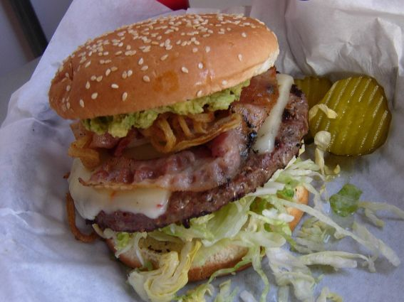

Palak tofu

Ingredients
- 300 grams of frozen spinach in leaves
- 1 package of firm tofu, drained and cut into cubes
- 1 onion, cubed
- 1 teaspoon of garlic, minced
- 1 teaspoon of ginger, minced
- 1 tomato, peeled and cubed
- 1 teaspoon of masala
- 1 teaspoon of coriander
- 1/2 teaspoon of cumin
- 1/2 teaspoon of salt
- 1 chili pepper, deseeded and minced
- 1 tablespoon of olive oil
- 50 ml of heavy cream
- fresh herbs for garnish
Method
- Heat oil, fry onion, garlic, ginger, chili pepper and spices, try till onion turns translucent.
- Add tomato and spinach, simmer 10-15 minutes.
- Blend spinach sauce and return to pan.
- Add tofu, simmer 10 minutes. Add 50 ml of heavy cream.
- Serve with rice or pad.
Written by Paula, published